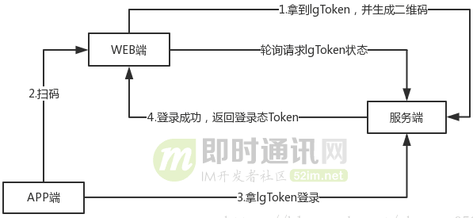
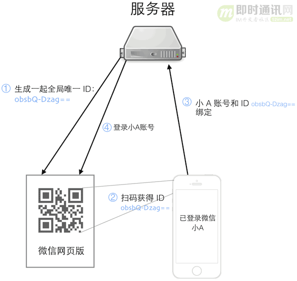

扫码登录
前言
本文将简要的介绍扫码登录功能的技术实现逻辑，并实际结合淘宝、微信的扫码登录功能，学习和研究大厂主流应用的技术实现思路。
内容
一、基本技术原理
1.1 扫码登录功能到底是什么样的？
首先介绍下什么是扫码登录。现在大部分同学手机上都装有微信、qq 和淘宝这一类的软件。而这些 app 都有他们相对应的网页端。为了让用户在使用他们的网页时登录更加方便和安全，使用手机扫一扫就可以登录的服务，就显的自然而然了。
几个主流大厂应用扫码登录时的界面效果如下：

有很多小伙伴可能会感到很神奇，网页上只是显示了个二维码，它怎么就知道是哪个手机扫到了二维码，并且进行登录的呢？而且，登录完成以后，还能直接把用户信息显示给用户，真的是很神奇啊。
1.2 扫码登录功能的完整技术逻辑
网页端与服务器的配合逻辑：
接下来就是对于这个服务的详细实现。
首先用户打开网站的登录页面的时候，向浏览器的服务器发送获取登录二维码的请求。服务器收到请求后，随机生成一个 uuid，将这个 id 作为 key 值存入 redis 服务器，同时设置一个过期时间，再过期后，用户登录二维码需要进行刷新重新获取。
同时，将这个 key 值和本公司的验证字符串合在一起，通过二维码生成接口，生成一个二维码的图片（二维码生成，网上有很多现成的接口和源码，这里不再介绍）。然后，将二维码图片和 uuid 一起返回给用户浏览器。
浏览器拿到二维码和 uuid 后，会每隔一秒向浏览器发送一次，登录是否成功的请求。请求中携带有 uuid 作为当前页面的标识符。这里有的同学就会奇怪了，服务器只存了个 uuid 在 redis 中作为 key 值，怎么会有用户的 id 信息呢？
这里确实会有用户的 id 信息，这个 id 信息是由手机服务器存入 redis 中的。具体请继续阅读“手机端与服务器的配合逻辑”。
手机端与服务器的配合逻辑：
话说，浏览器拿到二维码后，将二维码展示到网页上，并给用户一个提示：请掏出您的手机，打开扫一扫进行登录。
用户拿出手机扫描二维码，就可以得到一个验证信息和一个 uuid（扫描二维码获取字符串的功能在网上同样有很多 demo，这里就不详细介绍了）。
由于手机端已经进行过了登录，在访问手机端的服务器的时候，参数中都回携带一个用户的 token，手机端服务器可以从中解析到用户的 userId（这里从 token 中取值而不是手机端直接传 userid 是为了安全，直接传 userid 可能会被截获和修改，token 是加密的，被修改的风险会小很多）。手机端将解析到的数据和用户 token 一起作为参数，向服务器发送验证登录请求（这里的服务器是手机服务器，手机端的服务器跟网页端服务器不是同一台服务器）。
服务器收到请求后，首先对比参数中的验证信息，确定是否为用户登录请求接口。如果是，返回一个确认信息给手机端。
手机端收到返回后，将登录确认框显示给用户（防止用户误操作，同时使登录更加人性化）。用户确认是进行的登录操作后，手机再次发送请求。服务器拿到 uuId 和 userId 后，将用户的 userid 作为 value 值存入 redis 中以 uuid 作为 key 的键值对中。
登录成功时的逻辑：
然后，浏览器再次发送请求的时候，浏览器端的服务器就可以得到一个用户 Id，并调用登录的方法，生成一个浏览器端的 token，再浏览器再次发送请求的时候，将用户信息返回给浏览器，登录成功。这里存储用户 id 而不是直接存储用户信息是因为，手机端的用户信息，不一定是和浏览器端的用户信息完全一致。
详细的技术原理总结如下图所示：

二、淘宝的扫码登录技术实现
本节我们以淘宝的扫码登录为例，来实际研究分析一下淘宝的扫码登录实现逻辑。
登录界面传回来的参数为：
然后请求(GET)报文是这样的:
https://qrlogin.taobao.com/qrcodelogin/qrcodeLoginCheck.do?lgToken=2c3b4d53ef0513787bf4ce711ea5ba53&defaulturl=&_ksTS=1540106757739_2804&callback=jsonp2805
关键的就是 lgToken，是网页的唯一 ID，当打开了二维码登录的时候，网页在轮询(应该是长轮询 long polling)调用接口去请求服务器。
如果没有扫码，返回的为：

如果扫了的话则会返回：
{
"code": "10001",
"message": "mobile scan QRCode success",
"success": true
}
2
3
4
5
6
7
8
9
长时间没有扫码的话，网页端会停止轮询，二维码失效！
当手机端确认登录后，接口返回的是：
{ "code": "10006", "success": true, "url": "https://login.taobao.com/member/loginByIm.do?uid=cntaobaoxxx&token=ff82fc0d1d395a33d3b38ec5a4981336&time=1530179143250&asker=qrcodelogin&ask_version=1.0.0&defaulturl=https://www.taobao.com&webpas=0b7aed2d43f01825183e4a49c6cae47d1479929926"}
表示登录成功，当然手机端与服务端在点击"确认登录"之间的交互可能就是这样：网页端生成的 lgToken 去请求服务端，服务端记住了这个 lgToken 并认为登录了，当网页端再次轮询请求接口时，就返回真正的登录态 Token，网页端此时就可以凭着这个 Token 来登录了。
详细的技术逻辑如下图所示：

三、微信的扫码登录技术实现
3.1 技术原理流程图

微信的网页版访问地址是：https://wx.qq.com/，有兴趣也可以自行深入研究。
3.2 实际的技术实现逻辑
获取唯一的 uuid, 以及包含 uid 信息的二维码：

// 获取uuid
getUUID: function() {
vare = t.defer();
returnwindow.QRLogin = {},
$.ajax({
url: i.API_jsLogin,
dataType: "script"
}).done(function() {
200 == window.QRLogin.code ? e.resolve(window.QRLogin.uuid) : e.reject(window.QRLogin.code)
}).fail(function() {
e.reject()
}),
e.promise
}
2
3
4
5
6
7
8
9
10
11
12
13
14
15
16
17
18
19
20
21
22
23
24
25
26
27
浏览器轮询服务器，获取扫码状态：
// 查看扫码状态
checkLogin: function(e, a) {
varn = t.defer()
, a = a || 0;
returnwindow.code = 0,
window.checkLoginPromise = $.ajax({
url: i.API_login + "?loginicon=true&uuid="+ e + "&tip="+ a + "&r="+ ~newDate,
dataType: "script",
timeout: 35e3
}).done(function() {
newRegExp("/"+ location.host + "/");
if(window.redirect_uri && window.redirect_uri.indexOf("/"+ location.host + "/") < 0)
returnvoid (location.href = window.redirect_uri);
vare = {
code: window.code,
redirect_uri: window.redirect_uri,
userAvatar: window.userAvatar
};
n.resolve(e)
}).fail(function() {
n.reject()
}),
n.promise
}
2
3
4
5
6
7
8
9
10
11
12
13
14
15
16
17
18
19
20
21
22
23
24
25
26
27
28
29
30
31
32
33
34
35
36
37
38
39
40
41
42
43
44
45
46
47
根据服务器返回的扫码状态，进行相应的操作：
408 扫码超时： 如果手机没有扫码或没有授权登录，服务器会阻塞约 25s，然后返回状态码 408 -> 前端继续轮询


400 二维码失效： 大约 5 分钟的时间内不扫码，二维码失效

201 已扫码： 如果手机已经扫码，服务器立即返回状态码和用户的基本信息（window.code=201,window.code.userAvator="..."），-> 前端继续轮询

200 已授权： 如果手机点击了确认登录，服务器返回 200 及 token -> 前端停止轮询, 获取到 token，重定向到目标页

具体的代码示例如下：
// 根据服务器返回的扫码状态，进行相应的操作
functiono(c) {
switch(c.code) {
case200:
t.newLoginPage(c.redirect_uri).then(function(t) {
varo = t.match(/<ret>(.*)<\/ret>/)
, r = t.match(/<script>(.*)<\/script>/)
, c = t.match(/<skey>(.*)<\/skey>/)
, s = t.match(/<wxsid>(.*)<\/wxsid>/)
, l = t.match(/<wxuin>(.*)<\/wxuin>/)
, d = t.match(/<pass_ticket>(.*)<\/pass_ticket>/)
, f = t.match(/<message>(.*)<\/message>/)
, u = t.match(/<redirecturl>(.*)<\/redirecturl>/);
returnu ? void (window.location.href = u[1]) : o && "0"!= o[1] ? (alert(f && f[1] || "登录失败"),
i.report(i.AUTH_FAIL_COUNT, 1),
void location.reload()) : (e.$emit("newLoginPage", {
Ret: o && o[1],
SKey: c && c[1],
Sid: s && s[1],
Uin: l && l[1],
Passticket: d && d[1],
Code: r
}),
void (a.getCookie("webwx_data_ticket") || n.report(n.ReportType.cookieError, {
text: "webwx_data_ticket 票据丢失",
cookie: document.cookie
})))
});
break;
case201:
e.isScan = !0,
n.report(n.ReportType.timing, {
timing: {
scan: Date.now()
}
}),
t.checkLogin(e.uuid).then(o, function(t) {
!t && window.checkLoginPromise && (e.isBrokenNetwork = !0)
});
break;
case408:
t.checkLogin(e.uuid).then(o, function(t) {
!t && window.checkLoginPromise && (e.isBrokenNetwork = !0)
});
break;
case400:
case500:
case0:
vars = a.getCookie("refreshTimes") || 0;
s < 5 ? (s++,
a.setCookie("refreshTimes", s, .5),
document.location.reload()) : e.isNeedRefresh = !0;
break;
case202:
e.isScan = !1,
e.isAssociationLogin = !1,
a.setCookie("login_frequency", 0, 2),
window.checkLoginPromise && (window.checkLoginPromise.abort(),
window.checkLoginPromise = null),
r()
}
e.code = c.code,
e.userAvatar = c.userAvatar,
a.log("get code", c.code)
}
2
3
4
5
6
7
8
9
10
11
12
13
14
15
16
17
18
19
20
21
22
23
24
25
26
27
28
29
30
31
32
33
34
35
36
37
38
39
40
41
42
43
44
45
46
47
48
49
50
51
52
53
54
55
56
57
58
59
60
61
62
63
64
65
66
67
68
69
70
71
72
73
74
75
76
77
78
79
80
81
82
83
84
85
86
87
88
89
90
91
92
93
94
95
96
97
98
99
100
101
102
103
104
105
106
107
108
109
110
111
112
113
114
115
116
117
118
119
120
121
122
123
124
125
126
127
128
129
四、小结
扫码登录这个功能，现在已经不只出现有 IM 应用里，各种带有移动端的线上网站也都有了这个功能，所以本文中介绍的技术原理并不局限于只用于实现 IM 应用中的扫码登录。
另外，为了方便抓取真实的数据进行分析研究，本文中的 PC 端案例分析是针对的是网页端，但实际上如果你的 PC 端是富客户端（也就是.exe、.dmg 这样的安装版），原理也是一样的，而且还不需要考虑浏览器里的跨域问题等。
参考资料
联系作者
平凡世界，贵在坚持。